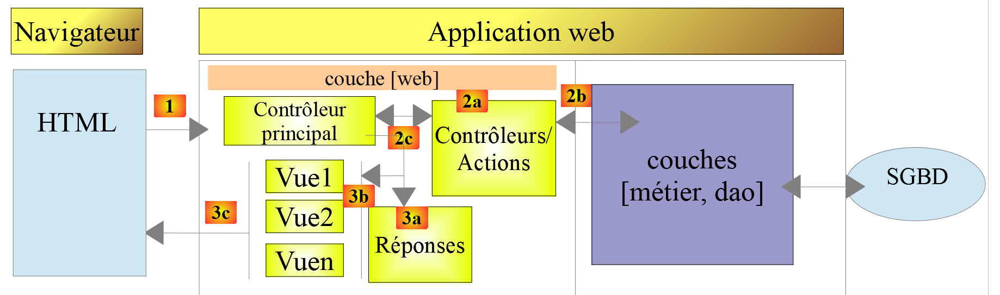

1. Introduction
The PDF in the document is HERE.
The code in this document is HERE.
This document is a product of Claude from Anthropic. This is a rewrite, for the PHP 8 language, of the course “Introduction to the PHP 7 Language” based on the example written by Serge Tahé in July 2019. It retains the outline, examples, and central theme, while changing the language:
- the 2019 course used PHP 7.3. Since then, PHP has undergone six major versions: 8.0 (2020), 8.1 (2021), 8.2 (2022), 8.3 (2023), 8.4 (2024), and 8.5 (2025). This document uses PHP 8.5;
- between these two versions, PHP has changed significantly: many features have been introduced (types, enumerations, read-only classes, [match], named arguments…), and many others have been deprecated: They still work, but PHP displays a warning message each time they are used, to alert users that they will be removed in a future version. The code in this document does not use any deprecated features: all scripts were run with PHP 8.5 configured to display all errors, warnings, and deprecations, and no [Deprecated] messages appear in their results;
- The tools have also changed: the [VS Code] editor replaces IDE and [NetBeans]; the [PHPUnit] testing framework replaces [Codeception]; the [curl] command replaces the [Postman] tool, the [Symfony Mailer] library replaces [SwiftMailer], which has been deprecated, and the [Mailpit] mail server replaces [hMailServer], which has also been deprecated.
This document provides a list of PHP console scripts in various areas (language structures, classes, access to files, databases, and the Internet). Web programming is addressed through web services. In this document, a web service refers to any web application that produces data (plain text, JSON, XML) rather than HTML pages. These are data servers, not web page servers—a combination of HTML, CSS, and JavaScript. It covers classic web concepts (the HTTP protocol, JSON or XML responses, session management, and authentication) that are also used in traditional web programming. The final section of the document also builds a HTML web application.
1.1. The Role of PHP in a Client/Server Application
Nowadays, it is common to build web applications in client/server mode:

- In [1], the web browser displays web pages for a user. These pages contain JavaScript, which implements a client for a [2] data web service, as well as a client for a [3] web page fragment server. Frameworks such as JavaScript, [Vue.js], [React], or [Angular] are designed for this purpose;
- In [2], the web server is a data server. It can be written in any language, for example, in PHP. It does not generate web pages in the traditional sense (HTML, CSS, JavaScript) except perhaps the first time. However, this first page can be obtained from a traditional web server ([3]). The JavaScript for the initial page will then generate the application’s various web pages by retrieving the [4] data to be displayed from the data server [2]. It can also retrieve web page fragments ([5]) to format this data from the web page server ([3]);
- In [4], the user initiates an action;
- in [6, 7], the user receives data formatted with a web page fragment.
In this document, we will write client/server applications in PHP with the following structure:

Here we have a client/server application written entirely in PHP. A [9] console script will query a [4] data server. What you’ll learn here about writing the data service can be reused in a web application: the data service in PHP can be kept, and the client PHP can be replaced by a client JavaScript.
As the central theme of this document, we will build an income tax calculation service in 13 versions. Version 12 will have the following architecture:

The server’s [web] layer will have a MVC architecture (Model–View–Controller). It will be able to respond in JSON, XML, or HTML. The entire course is aimed at building this version, which version 13 secures.
1.2. What Has Changed Between PHP 7 and PHP 8
The new features in PHP 8 are introduced throughout the chapters as they are needed, and are always compared to how things were done in the PHP 7 course. Here are the main ones, along with the chapter in which they appear:
New Feature | Version | Chapter |
Strict typing ([declare(strict_types=1)]), parameter and return types ([mixed]), union types ([int|float]), nullable types ([?string]) | 7.0 to 8.0 | The Basics of PHP |
the expression [match], the null-safe operator [?->], named arguments | 8.0 | The Basics of PHP |
[str_contains], [str_starts_with], [str_ends_with], [array_is_list], [json_validate], [array_find], [array_any], [array_all], [array_first], [array_last] | 8.0 to 8.5 | The Basics of PHP |
[fn] arrow functions, [f(...)] first-class callables, [|>] pipe operator | 7.4 to 8.5 | The Basics of PHP |
Typed attributes, constructor parameter promotion | 7.4, 8.0 | Classes |
Properties and read-only classes [readonly] | 8.1, 8.2 | Classes |
Enumerations [enum] | 8.1 | Classes |
Property hooks and asymmetric visibility [public private(set)] | 8.4 | Classes |
[clone] with attribute modification, the [#[\Override]] | 8.5, 8.3 | Classes |
The intersection types [A&B] and [new] in the default values | 8.1 | Interfaces |
Errors that have become exceptions ([TypeError], [ValueError], [DivisionByZeroError]…), [throw] expression, [catch] without a variable | 8.0 | Exceptions and Errors |
Constants in traits | 8.2 | Traits |
[PDO::connect()] and the subclasses [Pdo\Mysql], [Pdo\Pgsql] | 8.4 | MySQL |
the attribute [#[\SensitiveParameter]] | 8.2 | Application exercise, versions 5 and later |
the new API [Dom\XMLDocument] | 8.4 | Document Processing XML |
Conversely, here are the main features used by course PHP 7 that are now deprecated or removed, along with their replacements in this document:
Feature from Course PHP 7 | Status | Replacement |
Dynamic attributes (created by simple assignment [$objet->x = 1]) | Deprecated in 8.2 | declared attributes, or the class [stdClass] |
interpolation ["${var}"] | deprecated in 8.2 | ["$var"] or ["{$var}"] |
[utf8_encode], [utf8_decode] | Deprecated in 8.2 | [mb_convert_encoding] |
Implicitly nullable parameters [Type $x = null] | Deprecated in 8.4 | [?Type $x = null] |
conversions [(integer)], [(boolean)], [(double)] | deprecated in 8.5 | [(int)], [(bool)], [(float)] |
The constants [PDO::MYSQL_ATTR_*] | deprecated in 8.5 | [Pdo\Mysql::ATTR_*] |
Functions [imap_*] | removed from the core of PHP in 8.4 | POP3 / IMAP clients written using sockets |
the [SwiftMailer] library | discontinued | [Symfony Mailer] |
the [php-mime-mail-parser] library | requires an extension that is not provided | [zbateson/mail-mime-parser] |
[Codeception] | Replaced | [PHPUnit] 12 |
Apache 2.2 syntax [deny from all] | obsolete | [Require all denied] (Apache 2.4) |
1.3. Tools Used
The examples were written and tested using the following tools (their installation is described in the next chapter):
- [PHP] 8.5, configured to report all errors, warnings, and deprecations;
- The [Laragon] 8 package, which combines [Windows] and PHP 8.5, the [Apache] 2.4 web server, SGBD and [MySQL] 8.4, the [Redis] server, and the [Composer] dependency manager; the SGBD and [PostgreSQL] can be added with just a few clicks;
- the [Visual Studio Code] editor (VS Code) and its extension [PHP Intelephense];
- the PHP libraries installed with [Composer]: [symfony/http-foundation], [symfony/http-client], [symfony/mailer], [symfony/mime] 8, [predis/predis] 3, [zbateson/mail-mime-parser] 3, and, for testing, [phpunit/phpunit] 12;
- the test mail server [Mailpit] and, for the IMAP protocol, a server IMAP (an account [Gmail], or a local server);
- the command-line tool [curl], included with [Windows], which displays raw HTTP exchanges;
- a browser ([Chrome], [Firefox], [Edge]…).
The scripts in this document are commented, and their console output is reproduced. Additional explanations are sometimes provided. This document requires active reading: to understand a script, you must read its code, its comments, and its execution results. The screenshots of the web pages were taken using a program-controlled browser: these are actual pages from the course applications.
1.4. Examples
The code in this document is stored in a single folder named [php8-oct-2026]:
The folder [php8-oct-2026] must be placed inside the folder [www] of [Laragon] (for example, [C:\laragon\www\php8-oct-2026]): This is the root directory of the [Apache] web server. The web scripts are then accessible at URL in the form [http://localhost/php8-oct-2026/scripts-web/...].
1.5. Document Contents
Chapter | Contents |
Installation | Laragon, PHP 8.5, VS Code, Composer |
The Basics of PHP | Variables, Types, Strict Typing, Arrays, Strings, Functions, Text Files, JSON |
Practical Exercise, Versions 1 and 2 | Tax calculation, using functions |
Classes, Interfaces | classes, inheritance, typed attributes, [readonly], enumerations, property brackets, interfaces |
Exceptions and errors | The [Throwable] hierarchy of PHP 8, its own exceptions |
Application exercise, version 3 | Tax calculation using classes |
Features, layered applications | Reusing code, architecture [dao] / [métier] / [console] |
Practical Exercise, Version 4 | Layered tax calculation, tests [PHPUnit] |
Using SGBD and MySQL | PDO, prepared orders SQL, transactions |
Practical Exercise, Versions 5 through 7 | Tax data in a database: MySQL, then PostgreSQL, then either one |
Network Functions | TCP, HTTP, SMTP, POP3, IMAP |
Web services | Static and dynamic pages, JSON, settings, sessions, authentication, HTTPS |
Practical Exercise, Versions 8 through 10 | A tax calculation server and its client, logging, sending emails, cache [Redis] |
Document processing XML | SimpleXML, API, DOM, and PHP 8.4 |
Application Exercise, Version 11 | The tax calculation server responds with XML |
Practical Exercise, Version 12 | A server MVC responding with JSON, XML, or HTML; a web application; a client of the JSON service |
Practical Exercise, Version 13 | Secure access to the application’s files |
These are all chapters for beginners in PHP. However, it is assumed that the reader has already programmed in some language and knows what a variable, a loop, and a function are.